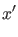
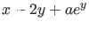
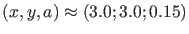

Next: Continuation of limit cycles Up: Equilibrium continuation Previous: Equilibrium initialization Contents
The first example we will look at is a 4-point discretization of the Bratu-Gelfand BVP [22]. This model is defined as follows:
|  | (42) | ||
|  | (43) |
| bratu.m | |
| 1 | function out = bratu |
| 2 | out{1} = @init; |
| 3 | out{2} = @fun_eval; |
| 4 | out{3} = @jacobian; |
| 5 | out{4} = @jacobianp; |
| 6 | out{5} = @hessians; |
| 7 | out{6} = @hessiansp; |
| 8 | out{7} = []; |
| 9 | out{8} = []; |
| 10 | out{9} = []; |
| 11 | out{10}= @userf1; |
| 12 | |
| 13 | end |
| 14 | |
| 15 | % -------------------------------------------------------------------------- |
| 16 | function dydt = fun_eval(t,kmrgd,a) |
| 17 | dydt = [ -2*kmrgd(1)+kmrgd(2)+a*exp(kmrgd(1)); |
| 18 | kmrgd(1)-2*kmrgd(2)+a*exp(kmrgd(2)) ]; |
| 19 | |
| 20 | % -------------------------------------------------------------------------- |
| 21 | function [tspan,y0,options] = init |
| 22 | tspan = [0; 10]; |
| 23 | y0 = [0;0];handles = feval(@bratu) |
| 24 | options = odeset('Jacobian',handles(3),'JacobianP', 'handles(4)',... |
| 25 | ...,'Hessians',handles(5), 'Hessiansp',handles(6)); |
| 26 | % -------------------------------------------------------------------------- |
| 27 | function jac = jacobian(t,kmrgd,a) |
| 28 | jac = [ -2+a*exp(kmrgd(1)) 1 |
| 29 | 1 -2+a*exp(kmrgd(2)) ]; |
| 30 | |
| 31 | % -------------------------------------------------------------------------- |
| 32 | function jacp = jacobianp(t,kmrgd,a) |
| 33 | |
| 34 | jacp = [ exp(kmrgd(1)) |
| 35 | exp(kmrgd(2)) ]; |
| 36 | |
| 37 | % -------------------------------------------------------------------------- |
| 38 | function hess = hessians(t,kmrgd,a) |
| 39 | hess1=[[a*exp(kmrgd(1)),0];[0,0]]; |
| 40 | hess2=[[0,0];[0,a*exp(kmrgd(2))]]; |
| 41 | hess(:,:,1) = hess1; |
| 42 | hess(:,:,2) = hess2; |
| 43 | |
| 44 | % -------------------------------------------------------------------------- |
| 45 | function hessp = hessiansp(t,kmrgd,a) |
| 46 | hessp1=[[exp(kmrgd(1)),0];[0,exp(kmrgd(2))]]; |
| 47 | hessp(:,:,1) = hessp1; |
| 48 | |
| 49 | %--------------------------------------------------------------------------- |
| 60 | function userfun1 = userf1(t,kmrgd,a) |
| 61 | userfun1 = a-0.2; |
| 62 | |
| bratu.m | |
global cds p=[0];ap=[1]; [x0,v0]=init_EP_EP(@bratu,[0;0],p,ap); opt=contset; opt=contset(opt,'MaxNumPoints',50); opt=contset(opt,'Singularities',1); opt=contset(opt,'Userfunctions',1); UserInfo.name='userf1'; UserInfo.state=1; UserInfo.label='u1'; opt=contset(opt,'UserfunctionsInfo',UserInfo); [x,v,s,h,f]=cont(@equilibrium,x0,[],opt); [x,v,s,h,f]=cont(x,v,s,h,f,cds); cpl(x,v,s,[3 1 2]);The above computations can be done by running testbratu.m in the directory Testruns. The output in the command window is as follows:
>> testbratu first point found tangent vector to first point found label = u1, x = ( 0.259174 0.259174 0.200002 ) label = LP, x = ( 1.000001 1.000001 0.367879 ) a=3.535537e-01 Neutral saddle label = H , x = ( 2.000000 2.000000 0.270671 ) label = u1, x = ( 2.542639 2.542639 0.200000 ) elapsed time = 0.4 secs npoints curve = 50 start computing extended curve label = BP, x = ( 3.000000 3.000000 0.149361 ) elapsed time = 0.1 secs npoints curve = 100We note that in the first continuation two zeros of the user function (label u1) were detected, as well as a limit point (label LP) and a neutral equilibrium (label H). A neutral equilibrium is an equilibrium with two real eigenvalues with sum zero.
In the extension of the run at  the system has a branch point (label BP).
cpl(x,v,s,[3 1 2]) plots a 3D-plot with the parameter on the x-axis and the first and second state variable on the y- and z-axes, respectively. The labels of the plot are changed manually by the following commands:
The resulting curve is plotted in Figure 8.
To select the branch point the output is used. Since the first and last points are also treated as singular, the array of structures s has 7 components
and the data concerning the branch point are at  To switch to another branch at the detected branch point, we select that branch point and we use the starter init_BP_EP. We start a forward and backward continuation from this point:
To switch to another branch at the detected branch point, we select that branch point and we use the starter init_BP_EP. We start a forward and backward continuation from this point:
testbratu; x1=x(1:2,s(6).index); p(ap)=x(3,s(6).index); [x0,v0]=init_BP_EP(@bratu,x1,p,s(6),0.01); opt=contset(opt,'InitStepsize',0.0001); [x1,v1,s1,h1,f1]=cont(@equilibrium,x0,v0,opt); cpl(x1,v1,s1,[3 1 2]); opt=contset(opt,'Backward',1); [x2,v2,s2,h2,f2]=cont(@equilibrium,x0,v0,opt); cpl(x2,v2,s2,[3 1 2]);
Note that is a vector containing the initial values of all parameters. The above computations can be done by running testbratu2.m in the directory Testruns. The output in the command window is as follows:
>> testbratu2 first point found tangent vector to first point found label = u1, x = ( 0.259174 0.259174 0.200002 ) label = LP, x = ( 1.000001 1.000001 0.367879 ) a=3.535537e-01 label = H , x = ( 2.000000 2.000000 0.270671 ) label = u1, x = ( 2.542639 2.542639 0.200000 ) elapsed time = 0.1 secs npoints curve = 50 start computing extended curve label = BP, x = ( 3.000000 3.000000 0.149361 ) elapsed time = 0.1 secs npoints curve = 100 first point found tangent vector to first point found elapsed time = 0.1 secs npoints curve = 50 first point found tangent vector to first point found label = BP, x = ( 3.000000 3.000000 0.149361 ) elapsed time = 0.1 secs npoints curve = 50
We note that the branch point is "discovered" a second time during the backward continuation of the secondary branch that is rooted at the branch point. All computed curves are plotted together in Figure 9.